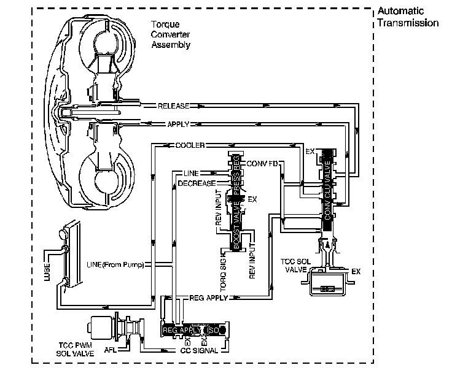

4L60-E / 4L65-E / 4L70-E Automatic Transmission
DTC P0741

Circuit Description
The torque converter clutch (TCC) solenoid valve is a normally-open exhaust valve that is used with the torque converter clutch pulse width modulation (TCC PWM) solenoid valve in order to control fluid acting on the converter clutch apply valve. The TCC solenoid valve attaches to the transmission case assembly extending into the pump cover. When grounded, energized, by the transmission control module (TCM), the TCC solenoid valve stops converter signal oil from exhausting. This causes converter signal oil pressure to increase and move the converter clutch apply valve against spring force and into the apply position. In this position, release fluid is open to an exhaust port and converter feed fluid fills the apply fluid circuit. The converter feed fluid applies the TCC. When the TCM no longer provides a ground path, the TCC solenoid valve de-energizes and apply fluid exhausts, releasing the TCC.
When the TCM detects high torque converter slip when the TCC is commanded OFF, then DTC P0741 sets. DTC P0741 is a type B DTC.
DTC Descriptor
This diagnostic procedure supports the following DTC:
DTC P0741 Torque Converter Clutch (TCC) System - Stuck Off
Conditions for Running the DTC
^ No TCC DTCs P1866, P1867 or P0742.
^ No ISS DTCs P0716 or P0717.
^ No OSS DTCs P0722 or P0723.
^ Ignition voltage between 8-18 volts.
^ The engine torque is greater than 50 N.m (37 lb ft).
^ The throttle position is 8-90 percent.
^ The gear ratio is within the following ranges:
- 1.40:1-1.65:1 - 2nd gear
- 0.94:1-1.05:1 - 3rd gear
- 0.47:1-0.98:1 - 4th gear
^ The TCC is commanded ON for 1 second.
^ The TCC duty cycle is greater than 65 percent for more than 3 seconds.
Conditions for Setting the DTC
The TCM commands the TCC ON, and the TCC slip is 150 RPM or greater for 5 seconds 2 times during the same trip.
Action Taken When the DTC Sets
^ The TCM requests the ECM to illuminate the malfunction indicator lamp (MIL) during the second consecutive drive trip in which the Conditions for Setting the DTC are met.
^ The TCM commands elevated line pressure.
^ The TCM inhibits TCC.
^ The TCM inhibits 4th gear if the transmission is in Hot Mode.
^ The TCM freezes transmission adaptive functions.
^ At the time of the first failure, the TCM records the operating conditions when the Conditions for Setting the DTC are met. The TCM stores this information as a Failure Record.
^ At the time of the second failure, the ECM records the operating conditions when the Conditions for Setting the DTC are met. The ECM stores this information as a Freeze Frame.
^ The TCM stores DTC P0741 in TCM history.
Conditions for Clearing the DTC
^ The ECM turns OFF the MIL after the third consecutive drive trip in which the TCM does not send a MIL illumination request.
^ A scan tool can clear the DTC.
^ The TCM clears the DTC from TCM history if the vehicle completes 40 warm-up cycles without a non-emission related diagnostic fault occurring.
^ The TCM cancels the default actions when the ignition is OFF long enough in order to power down the TCM.
Diagnostic Aids
^ Inspect the transmission fluid lines to the radiator. The lines may be pinched, plugged or twisted.
^ Contamination may cause the TCC apply valve to stick in the valve body.
^ Internal damage to the torque converter may prevent TCC application.
Test Description
The number below refers to the step number on the diagnostic table.
2. This step tests the hydraulic state of the TCC. When the TCM commands the TCC solenoid valve OFF, the slip speed should increase.